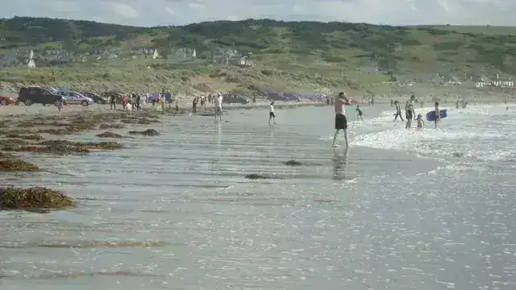
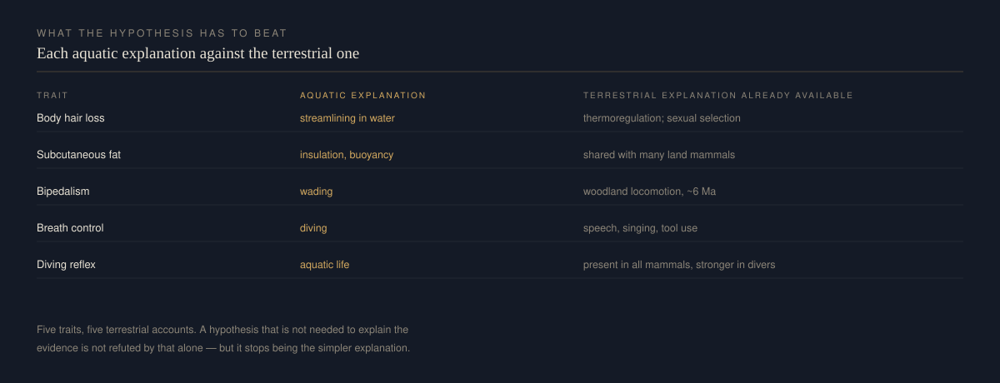

The claim
Alister Hardy proposed in 1960 that a branch of apes was pushed by competition into coastal and shallow-water foraging, and that a period of semi-aquatic life left marks on human anatomy: loss of body hair, a layer of subcutaneous fat, bipedalism, voluntary breath control, the diving reflex, and the shape of the nose and hand.
Maps, diagrams and images



Elaine Morgan made the case for a general reader in The Descent of Woman (1972) and again in The Aquatic Ape Hypothesis (1997). Morgan's argument was also a feminist one: she noted that the savannah narratives of the 1960s were stories about male hunters, and offered a different story. The critique landed. The hypothesis did not.
The problems, in order of weight
There is no fossil evidence of an aquatic phase: no hominin with flipper-like limbs, no marine-associated hominin sites of the right age with the right anatomy. Body hair loss is not unique to humans among mammals, and the human pattern — fine, short, densely follicled — is not what an aquatic mammal has. Subcutaneous fat is shared with many terrestrial mammals, including other primates. Bipedalism appears in the fossil record before any plausible coastal adaptation, in Orrorin and Ardipithecus, in woodland settings.
The comparative argument is the strongest one against: animals that return to the water converge — whales, seals, sirenians, otters — and the convergence is unmistakable in the skeleton. Humans show none of it.
The version that survives
Waterside life is real. Coastal sites in South Africa show shellfish harvesting around 164,000 years ago, and the capacity to cross water is documented at least 50,000 years ago in Australia and much earlier at Flores. Wading, swimming and shore foraging were part of the human repertoire. That is the waterside hypothesis, and it is a claim about diet and range, not about a semi-aquatic ancestor.
Fringe, not hoax. The hypothesis was proposed in good faith, published in a scientific journal in 1960, and defended for decades. It has not been supported.
The distinction matters. Palaeoanthropology rejected it on evidence — the same evidence that later confirmed the waterside version.
What would revive it: a hominin fossil assemblage from a marine setting, with anatomy that converges on other secondarily aquatic mammals, in the right stratigraphic window. Nothing like it has been found.
Why it is here
Because it is the archive's best example of a claim that is more appealing than the consensus and less supported than it looks, and because the reason it failed — no fossil, no convergence, better explanations already in hand — is a reusable test for every other origin story on this site.
Sources for this page
- Wikipedia, “Aquatic ape hypothesis” — history and criticismen.wikipedia.org
- Langdon (1997), Journal of Human Evolution — a testable version of the hypothesisdoi.org
- Marean et al. (2007), Nature — early shellfish use at Pinnacle Pointdoi.org
- Wikipedia, “Orrorin” — bipedalism before the coastal sitesen.wikipedia.org
Open resources on this topic
- PapersOpen-access articles: DOAJ · PubMed Central · Internet Archive Scholar
- BooksPublic-domain and borrowable copies: Open Library · Project Gutenberg · Google Books · Internet Archive
Cite this page
Momin, S. (2026). The Aquatic Ape. The Larger World Archive. https://drsamonline.github.io/LARGE_GLOBE/aquatic-ape.htmlMomin, Sohil. “The Aquatic Ape.” The Larger World Archive, 2026, https://drsamonline.github.io/LARGE_GLOBE/aquatic-ape.html.Momin, Sohil. “The Aquatic Ape.” The Larger World Archive, 2026. https://drsamonline.github.io/LARGE_GLOBE/aquatic-ape.html.@misc{the2026aquatic,
author = {Momin, Sohil},
title = {The Aquatic Ape},
year = {2026},
howpublished = {The Larger World Archive},
url = {https://drsamonline.github.io/LARGE_GLOBE/aquatic-ape.html},
note = {Last reviewed 20 November 2026}
}Last reviewed 20 November 2026 · Corrections policy · this page is not peer reviewed